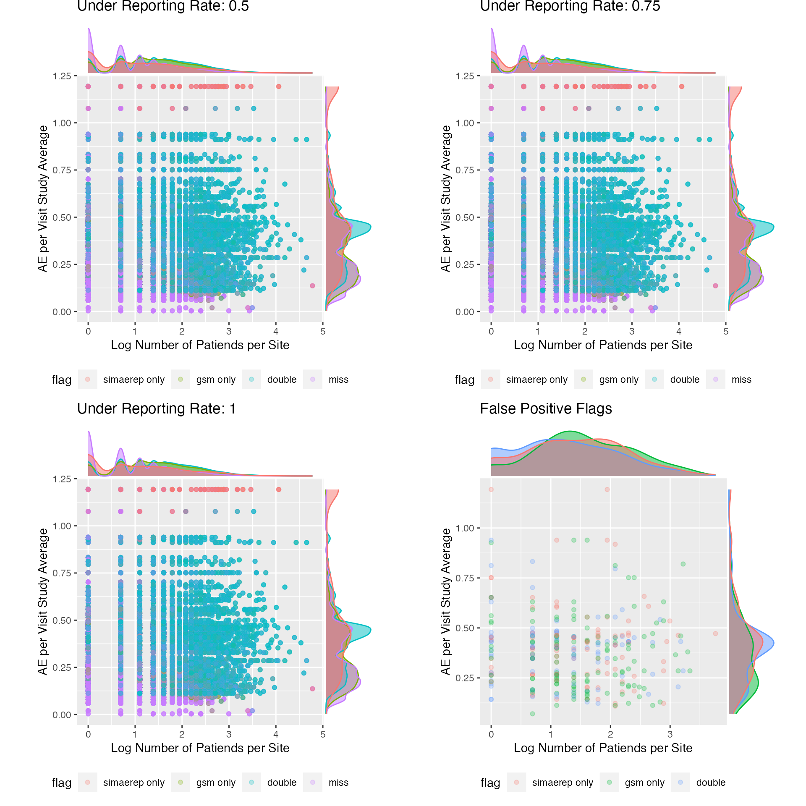

Load
suppressPackageStartupMessages(library(tidyverse))
suppressPackageStartupMessages(library(knitr))
suppressPackageStartupMessages(library(furrr))
suppressPackageStartupMessages(library(future))
suppressPackageStartupMessages(library(simaerep))
suppressPackageStartupMessages(library(ggExtra))
suppressPackageStartupMessages(library(gridExtra))
plan(multisession, workers = 6)Install {gsm}
devtools::install_github("Gilead-BioStats/gsm", ref = "main")Introduction
The {gsm} R package provides a standardized Risk Based Quality Monitoring (RBQM) framework for clinical trials that pairs a flexible data pipeline with robust reports. It also uses Funnel Plots to flag outliers which provide broader tolerance limits for sites with low exposure and narrower limits for sites with higher exposure. This method is different to the event rate based limits we have used in previous heuristics to measure {simaerep} performance. Funnel plots are discussed in greater detail by Zink et al. 2018
Prepare Data
Load Portfolio Configurations
| study_id | ae_per_visit_mean | ae_per_day_mean | site_number | max_visit_sd | max_visit_mean | max_days_sd | max_days_mean | n_pat |
|---|---|---|---|---|---|---|---|---|
| 0001 | 0.2687087 | 0.0072492 | 0001 | 0.7071068 | 22.50000 | 622 | 622 | 2 |
| 0001 | 0.2687087 | 0.0072492 | 0002 | 2.1213203 | 28.50000 | 1350 | 1350 | 2 |
| 0001 | 0.2687087 | 0.0072492 | 0003 | 0.5773503 | 19.50000 | 738 | 738 | 4 |
| 0001 | 0.2687087 | 0.0072492 | 0004 | 8.8694231 | 31.33333 | 1461 | 1461 | 6 |
| 0001 | 0.2687087 | 0.0072492 | 0005 | 0.0000000 | 30.00000 | 1253 | 1253 | 1 |
| 0001 | 0.2687087 | 0.0072492 | 0006 | 0.0000000 | 35.00000 | 1479 | 1479 | 1 |
| 0001 | 0.2687087 | 0.0072492 | 0007 | 0.0000000 | 36.00000 | 1415 | 1415 | 1 |
| 0001 | 0.2687087 | 0.0072492 | 0008 | 5.3363087 | 26.14286 | 971 | 971 | 7 |
| 0001 | 0.2687087 | 0.0072492 | 0009 | 0.0000000 | 20.00000 | 756 | 756 | 2 |
| 0001 | 0.2687087 | 0.0072492 | 0010 | 1.8165902 | 27.40000 | 1364 | 1364 | 5 |
| 0001 | 0.2687087 | 0.0072492 | 0011 | 1.7320508 | 27.00000 | 1190 | 1190 | 3 |
| 0001 | 0.2687087 | 0.0072492 | 0012 | 1.4142136 | 26.00000 | 1186 | 1186 | 2 |
| 0001 | 0.2687087 | 0.0072492 | 0013 | 0.0000000 | 25.00000 | 1127 | 1127 | 1 |
| 0001 | 0.2687087 | 0.0072492 | 0014 | 0.0000000 | 18.00000 | 566 | 566 | 1 |
| 0001 | 0.2687087 | 0.0072492 | 0015 | 1.7078251 | 18.75000 | 588 | 588 | 4 |
| 0001 | 0.2687087 | 0.0072492 | 0016 | 0.0000000 | 25.00000 | 644 | 644 | 1 |
| 0001 | 0.2687087 | 0.0072492 | 0017 | 1.0000000 | 22.00000 | 827 | 827 | 3 |
| 0001 | 0.2687087 | 0.0072492 | 0018 | 4.0414519 | 32.50000 | 1534 | 1534 | 4 |
| 0001 | 0.2687087 | 0.0072492 | 0019 | 12.9408913 | 25.33333 | 1183 | 1183 | 6 |
| 0001 | 0.2687087 | 0.0072492 | 0020 | 0.5773503 | 20.66667 | 770 | 770 | 3 |
| 0001 | 0.2687087 | 0.0072492 | 0021 | 14.8492424 | 28.50000 | 666 | 666 | 2 |
| 0001 | 0.2687087 | 0.0072492 | 0022 | 9.0369611 | 26.50000 | 987 | 987 | 4 |
| 0001 | 0.2687087 | 0.0072492 | 0023 | 0.0000000 | 23.00000 | 931 | 931 | 1 |
| 0001 | 0.2687087 | 0.0072492 | 0024 | 0.0000000 | 38.00000 | 938 | 938 | 1 |
| 0001 | 0.2687087 | 0.0072492 | 0025 | 6.3639610 | 26.50000 | 938 | 938 | 2 |
Simulate Portfolio
And again we simulate artificial visit level data. Using parallel processing. At this stage we have simulated compliant test data of a realistic study portfolio.
df_portf <- sim_test_data_portfolio(df_config, parallel = TRUE, progress = TRUE)
df_portf %>%
head(25) %>%
knitr::kable()| study_id | ae_per_visit_mean | ae_per_day_mean | site_number | max_visit_sd | max_visit_mean | max_days_sd | max_days_mean | patnum | visit | n_ae |
|---|---|---|---|---|---|---|---|---|---|---|
| 0001 | 0.2687087 | 0.0072492 | 0001 | 0.7071068 | 22.5 | 622 | 622 | 0001 | 1 | 0 |
| 0001 | 0.2687087 | 0.0072492 | 0001 | 0.7071068 | 22.5 | 622 | 622 | 0001 | 2 | 0 |
| 0001 | 0.2687087 | 0.0072492 | 0001 | 0.7071068 | 22.5 | 622 | 622 | 0001 | 3 | 1 |
| 0001 | 0.2687087 | 0.0072492 | 0001 | 0.7071068 | 22.5 | 622 | 622 | 0001 | 4 | 2 |
| 0001 | 0.2687087 | 0.0072492 | 0001 | 0.7071068 | 22.5 | 622 | 622 | 0001 | 5 | 2 |
| 0001 | 0.2687087 | 0.0072492 | 0001 | 0.7071068 | 22.5 | 622 | 622 | 0001 | 6 | 2 |
| 0001 | 0.2687087 | 0.0072492 | 0001 | 0.7071068 | 22.5 | 622 | 622 | 0001 | 7 | 2 |
| 0001 | 0.2687087 | 0.0072492 | 0001 | 0.7071068 | 22.5 | 622 | 622 | 0001 | 8 | 2 |
| 0001 | 0.2687087 | 0.0072492 | 0001 | 0.7071068 | 22.5 | 622 | 622 | 0001 | 9 | 2 |
| 0001 | 0.2687087 | 0.0072492 | 0001 | 0.7071068 | 22.5 | 622 | 622 | 0001 | 10 | 3 |
| 0001 | 0.2687087 | 0.0072492 | 0001 | 0.7071068 | 22.5 | 622 | 622 | 0001 | 11 | 4 |
| 0001 | 0.2687087 | 0.0072492 | 0001 | 0.7071068 | 22.5 | 622 | 622 | 0001 | 12 | 4 |
| 0001 | 0.2687087 | 0.0072492 | 0001 | 0.7071068 | 22.5 | 622 | 622 | 0001 | 13 | 4 |
| 0001 | 0.2687087 | 0.0072492 | 0001 | 0.7071068 | 22.5 | 622 | 622 | 0001 | 14 | 5 |
| 0001 | 0.2687087 | 0.0072492 | 0001 | 0.7071068 | 22.5 | 622 | 622 | 0001 | 15 | 5 |
| 0001 | 0.2687087 | 0.0072492 | 0001 | 0.7071068 | 22.5 | 622 | 622 | 0001 | 16 | 5 |
| 0001 | 0.2687087 | 0.0072492 | 0001 | 0.7071068 | 22.5 | 622 | 622 | 0001 | 17 | 5 |
| 0001 | 0.2687087 | 0.0072492 | 0001 | 0.7071068 | 22.5 | 622 | 622 | 0001 | 18 | 5 |
| 0001 | 0.2687087 | 0.0072492 | 0001 | 0.7071068 | 22.5 | 622 | 622 | 0001 | 19 | 5 |
| 0001 | 0.2687087 | 0.0072492 | 0001 | 0.7071068 | 22.5 | 622 | 622 | 0001 | 20 | 5 |
| 0001 | 0.2687087 | 0.0072492 | 0001 | 0.7071068 | 22.5 | 622 | 622 | 0001 | 21 | 5 |
| 0001 | 0.2687087 | 0.0072492 | 0001 | 0.7071068 | 22.5 | 622 | 622 | 0001 | 22 | 5 |
| 0001 | 0.2687087 | 0.0072492 | 0001 | 0.7071068 | 22.5 | 622 | 622 | 0002 | 1 | 0 |
| 0001 | 0.2687087 | 0.0072492 | 0001 | 0.7071068 | 22.5 | 622 | 622 | 0002 | 2 | 0 |
| 0001 | 0.2687087 | 0.0072492 | 0001 | 0.7071068 | 22.5 | 622 | 622 | 0002 | 3 | 2 |
Apply {gsm}
Example
dfSUBJ <- df_portf %>%
select(study_id, siteid = site_number, subjid = patnum, timeonstudy = visit) %>%
summarise(timeonstudy = max(timeonstudy), .by = c(study_id, siteid, subjid)) %>%
group_by(study_id) %>%
nest()
dfAE <- df_portf %>%
select(study_id, subjid = patnum, n_ae) %>%
summarise(n_ae = max(n_ae), .by = c(study_id, subjid)) %>%
filter(n_ae > 0) %>%
mutate(n_ae = map(n_ae, ~ tibble(n = seq(1, .)), .progress = TRUE)) %>%
unnest(n_ae) %>%
select(- n) %>%
group_by(study_id) %>%
nest()
dfInput <- gsm::AE_Map_Raw(list(dfSUBJ = dfSUBJ$data[[1]], dfAE = dfAE$data[[1]]))
dfInput## # A tibble: 113 × 5
## SubjectID SiteID Exposure Count Rate
## <chr> <chr> <int> <int> <dbl>
## 1 0001 0001 22 5 0.227
## 2 0002 0001 22 5 0.227
## 3 0003 0002 30 9 0.3
## 4 0004 0002 28 8 0.286
## 5 0005 0003 17 5 0.294
## 6 0006 0003 19 5 0.263
## 7 0007 0003 19 1 0.0526
## 8 0008 0003 19 3 0.158
## 9 0009 0004 31 4 0.129
## 10 0010 0004 30 1 0.0333
## # ℹ 103 more rows
dfTransformed <- gsm::Transform_Rate(
dfInput,
strNumeratorCol = "Count",
strDenominatorCol = "Exposure"
)
dfTransformed## # A tibble: 44 × 4
## GroupID Numerator Denominator Metric
## <chr> <int> <int> <dbl>
## 1 0001 10 44 0.227
## 2 0002 17 58 0.293
## 3 0003 14 74 0.189
## 4 0004 39 173 0.225
## 5 0005 14 30 0.467
## 6 0006 16 35 0.457
## 7 0007 10 36 0.278
## 8 0008 41 180 0.228
## 9 0009 12 40 0.3
## 10 0010 41 132 0.311
## # ℹ 34 more rows
dfAnalyzed <- gsm::Analyze_NormalApprox(dfTransformed)
dfAnalyzed## # A tibble: 44 × 7
## GroupID Numerator Denominator Metric OverallMetric Factor Score
## <chr> <int> <int> <dbl> <dbl> <dbl> <dbl>
## 1 0003 14 74 0.189 0.270 1.49 -1.28
## 2 0039 7 42 0.167 0.270 1.49 -1.24
## 3 0019 44 197 0.223 0.270 1.49 -1.21
## 4 0004 39 173 0.225 0.270 1.49 -1.08
## 5 0026 8 44 0.182 0.270 1.49 -1.08
## 6 0008 41 180 0.228 0.270 1.49 -1.05
## 7 0021 19 88 0.216 0.270 1.49 -0.936
## 8 0017 14 67 0.209 0.270 1.49 -0.922
## 9 0023 4 23 0.174 0.270 1.49 -0.850
## 10 0027 4 21 0.190 0.270 1.49 -0.672
## # ℹ 34 more rows
dfFlagged <- gsm::Flag_NormalApprox(dfAnalyzed, vThreshold = c(-3, -2, 2, 3))
dfFlagged## # A tibble: 44 × 8
## GroupID Numerator Denominator Metric OverallMetric Factor Score Flag
## <chr> <int> <int> <dbl> <dbl> <dbl> <dbl> <dbl>
## 1 0006 16 35 0.457 0.270 1.49 2.04 1
## 2 0032 14 26 0.538 0.270 1.49 2.53 1
## 3 0003 14 74 0.189 0.270 1.49 -1.28 0
## 4 0039 7 42 0.167 0.270 1.49 -1.24 0
## 5 0019 44 197 0.223 0.270 1.49 -1.21 0
## 6 0004 39 173 0.225 0.270 1.49 -1.08 0
## 7 0026 8 44 0.182 0.270 1.49 -1.08 0
## 8 0008 41 180 0.228 0.270 1.49 -1.05 0
## 9 0021 19 88 0.216 0.270 1.49 -0.936 0
## 10 0017 14 67 0.209 0.270 1.49 -0.922 0
## # ℹ 34 more rows
dfSummary <- gsm::Summarize(dfFlagged)
dfSummary## # A tibble: 44 × 6
## GroupID Numerator Denominator Metric Score Flag
## <chr> <int> <int> <dbl> <dbl> <dbl>
## 1 0032 14 26 0.538 2.53 1
## 2 0006 16 35 0.457 2.04 1
## 3 0044 10 20 0.5 1.90 0
## 4 0030 12 25 0.48 1.94 0
## 5 0005 14 30 0.467 1.99 0
## 6 0013 10 25 0.4 1.20 0
## 7 0014 7 18 0.389 0.931 0
## 8 0037 11 30 0.367 0.977 0
## 9 0040 14 39 0.359 1.03 0
## 10 0042 17 50 0.34 0.914 0
## # ℹ 34 more rows
dfBounds <- gsm::Analyze_NormalApprox_PredictBounds(dfTransformed, vThreshold = c(-3, -2, 2, 3))
dfBounds## # A tibble: 1,238 × 5
## Threshold Denominator LogDenominator Numerator Metric
## <dbl> <dbl> <dbl> <dbl> <dbl>
## 1 -3 36.6 3.60 0.0492 0.00134
## 2 -3 37.3 3.62 0.147 0.00393
## 3 -3 38.0 3.64 0.245 0.00645
## 4 -3 38.8 3.66 0.345 0.00889
## 5 -3 39.5 3.68 0.445 0.0113
## 6 -3 40.2 3.69 0.546 0.0136
## 7 -3 40.9 3.71 0.648 0.0158
## 8 -3 41.6 3.73 0.751 0.0180
## 9 -3 42.3 3.75 0.854 0.0202
## 10 -3 43.1 3.76 0.959 0.0223
## # ℹ 1,228 more rows
chart <- gsm::Visualize_Scatter(dfFlagged, dfBounds)
chart
Simulate UR
sim_gsm_ur <- function(site, ur_rate, dfTransformed) {
dfTransformed <- dfTransformed %>%
mutate(
Numerator = ifelse(GroupID == site, Numerator * (1 - ur_rate), Numerator),
Metric = Numerator / Denominator
)
gsm::Analyze_NormalApprox(dfTransformed) %>%
filter(GroupID == site) %>%
pull(Score)
}
sim_gsm_ur("0001", ur_rate = 0.75, dfTransformed)## [1] -2.406863
df_sim <- dfSUBJ %>%
inner_join(dfAE, by = "study_id") %>%
ungroup() %>%
mutate(
trans = map2(data.x, data.y, ~ gsm::AE_Map_Raw(list(dfSUBJ = .x, dfAE = .y))),
trans = map(trans, ~ gsm::Transform_Rate(., strNumeratorCol = "Count", strDenominatorCol = "Exposure")),
sites = map(data.x, ~ distinct(., siteid))
) %>%
select(- starts_with("data.")) %>%
unnest(sites) %>%
mutate(ur = list(tibble(ur_rate = c(0, 0.1, 0.25, 0.5, 0.75, 1)))) %>%
unnest(ur) %>%
mutate(
score = pmap_dbl(list(siteid, ur_rate, trans), sim_gsm_ur, .progress = TRUE)
)## Warning: There were 530 warnings in `mutate()`.
## The first warning was:
## ℹ In argument: `z_i = ifelse(...)`.
## Caused by warning:
## ! There was 1 warning in `mutate()`.
## ℹ In argument: `z_0 = ifelse(...)`.
## Caused by warning in `sqrt()`:
## ! NaNs produced
## ℹ Run `dplyr::last_dplyr_warnings()` to see the 529 remaining warnings.
df_sim## # A tibble: 93,942 × 5
## study_id trans siteid ur_rate score
## <chr> <list> <chr> <dbl> <dbl>
## 1 0001 <tibble [44 × 4]> 0001 0 -0.523
## 2 0001 <tibble [44 × 4]> 0001 0.1 -0.794
## 3 0001 <tibble [44 × 4]> 0001 0.25 -1.19
## 4 0001 <tibble [44 × 4]> 0001 0.5 -1.82
## 5 0001 <tibble [44 × 4]> 0001 0.75 -2.41
## 6 0001 <tibble [44 × 4]> 0001 1 -2.93
## 7 0001 <tibble [44 × 4]> 0002 0 0.325
## 8 0001 <tibble [44 × 4]> 0002 0.1 -0.0789
## 9 0001 <tibble [44 × 4]> 0002 0.25 -0.681
## 10 0001 <tibble [44 × 4]> 0002 0.5 -1.64
## # ℹ 93,932 more rowsUR {simaerep}
df_sim_simaerep <- sim_ur_scenarios(
df_portf,
extra_ur_sites = 0,
ur_rate = c(0, 0.1, 0.25, 0.5, 0.75, 1),
parallel = TRUE,
poisson = TRUE,
prob_lower = TRUE,
progress = TRUE
)Evaluate
Combine Results
df_sim_thresh2 <- df_sim %>%
mutate(
is_ur = score <= -2,
type = "{gsm} - thresh: -2",
site_number = siteid
) %>%
select(type, study_id, site_number, ur_rate, is_ur, score)
df_sim_simaerep_threshp95 <- df_sim_simaerep %>%
mutate(
is_ur = prob_low_prob_ur >= 0.95,
type = "{simaerep} - thresh: 0.95"
) %>%
select(type, study_id, site_number, ur_rate, is_ur, score = prob_low_prob_ur)
df_eval <- bind_rows(
df_sim_thresh2,
df_sim_simaerep_threshp95,
)Aggregate
get_prop_test_ci95 <- function(..., ix) {
stopifnot(ix %in% c(1, 2))
tryCatch(
prop.test(...)$conf.int[ix],
error = function(cnd) c(NA, NA)[ix]
)
}
aggr_results <- function(df_eval) {
df_perf <- df_eval %>%
summarise(
n = n(),
.by = c(type, ur_rate, is_ur)
) %>%
pivot_wider(
names_from = is_ur,
values_from = n,
names_prefix = "is_ur_",
values_fill = 0
) %>%
mutate(
n_sites = is_ur_TRUE + is_ur_FALSE + is_ur_NA,
ratio = is_ur_TRUE / n_sites,
ratio_type = ifelse(ur_rate == 0, "fpr", "tpr"),
ci95_low = map2_dbl(is_ur_TRUE, n_sites, ~ get_prop_test_ci95(.x, .y, ix = 1)),
ci95_high = map2_dbl(is_ur_TRUE, n_sites, ~ get_prop_test_ci95(.x, .y, ix = 2))
)
}
df_perf <- aggr_results(df_eval)Table
| type | ur_rate | is_ur_FALSE | is_ur_TRUE | is_ur_NA | n_sites | ratio | ratio_type | ci95_low | ci95_high |
|---|---|---|---|---|---|---|---|---|---|
| {gsm} - thresh: -2 | 0.00 | 15347 | 220 | 90 | 15657 | 0.014 | fpr | 0.012 | 0.016 |
| {gsm} - thresh: -2 | 0.10 | 14621 | 946 | 90 | 15657 | 0.060 | tpr | 0.057 | 0.064 |
| {gsm} - thresh: -2 | 0.25 | 11617 | 3951 | 89 | 15657 | 0.252 | tpr | 0.246 | 0.259 |
| {gsm} - thresh: -2 | 0.50 | 6875 | 8694 | 88 | 15657 | 0.555 | tpr | 0.547 | 0.563 |
| {gsm} - thresh: -2 | 0.75 | 4164 | 11406 | 87 | 15657 | 0.728 | tpr | 0.721 | 0.735 |
| {gsm} - thresh: -2 | 1.00 | 2600 | 12971 | 86 | 15657 | 0.828 | tpr | 0.822 | 0.834 |
| {simaerep} - thresh: 0.95 | 0.00 | 15480 | 194 | 0 | 15674 | 0.012 | fpr | 0.011 | 0.014 |
| {simaerep} - thresh: 0.95 | 0.10 | 14762 | 912 | 0 | 15674 | 0.058 | tpr | 0.055 | 0.062 |
| {simaerep} - thresh: 0.95 | 0.25 | 12278 | 3396 | 0 | 15674 | 0.217 | tpr | 0.210 | 0.223 |
| {simaerep} - thresh: 0.95 | 0.50 | 7815 | 7859 | 0 | 15674 | 0.501 | tpr | 0.494 | 0.509 |
| {simaerep} - thresh: 0.95 | 0.75 | 4627 | 11047 | 0 | 15674 | 0.705 | tpr | 0.698 | 0.712 |
| {simaerep} - thresh: 0.95 | 1.00 | 3416 | 12258 | 0 | 15674 | 0.782 | tpr | 0.775 | 0.788 |
Plot Performance Metrics
- {gsm} has better performance than {simaerep}
plot_perf <- function(df_perf) {
df_perf %>%
mutate(ur_rate = paste0("under-reporting rate: ", ur_rate, " - ", ratio_type),
ur_rate = ifelse(str_detect(ur_rate, "fpr"), "fpr", ur_rate)) %>%
group_by(ur_rate) %>%
ggplot(aes(type, ratio)) +
geom_errorbar(aes(ymin = ci95_low, ymax = ci95_high), color = "violetred2") +
facet_wrap(~ ur_rate, ncol = 1) +
coord_flip() +
labs(
x = "",
y = "CI95 Performance Ratio",
title = "{simaerep} vs {gsm} Performance",
subtitle = "Only one under-reporting site per study."
)
}
plot_perf(df_perf)
Analysis
- {gsm} correctly flags more sites in studies with <= 0.25 AE per Visit with higher number of patients per site
- {simarep} correctly flags more sites in studies with 0.25 - 0.5 AE per visit with smaller number of patients per site
- false positive flagging for {simaerep} is similarly distributed as true positive flagging
- false positive flagging for {gsm} evenly covers the whole distribution range
df_qu <- df_portf %>%
summarize(n_pat = n_distinct(patnum), .by = c("study_id", "site_number", "ae_per_visit_mean")) %>%
inner_join(
df_sim %>%
select(study_id, site_number = siteid, ur_rate, score)
) %>%
inner_join(
df_sim_simaerep %>%
select(study_id, site_number, ur_rate, prob_low_prob_ur)
) %>%
mutate(
score = ifelse(is.na(score), 0 , score),
flag = case_when(
score <= -2 & prob_low_prob_ur >= 0.95 ~ "double",
score <= -2 ~ "gsm only",
prob_low_prob_ur >= 0.95 ~ "simaerep only",
TRUE ~ "miss"),
flag = fct_relevel(flag,"simaerep only", "gsm only", "double", "miss")
)
plot_flags <- function(df, ur_rate) {
p <- df %>%
filter(ur_rate == ur_rate) %>%
ggplot(aes(log(n_pat), ae_per_visit_mean, colour = flag)) +
geom_point(alpha = 0.25) +
theme(legend.position = "bottom", aspect.ratio = 1) +
labs(x = "Log Number of Patiends per Site", y = "AE per Visit Study Average", title = paste("Under Reporting Rate:", ur_rate))
ggExtra::ggMarginal(p, groupColour = TRUE, groupFill = TRUE)
}
p_p5 <- plot_flags(df_qu, 0.5)
p_p75 <- plot_flags(df_qu, 0.75)
p_1 <- plot_flags(df_qu, 1)
p_fpr <- df_qu %>%
filter(ur_rate == 0, flag != "miss") %>%
ggplot(aes(log(n_pat), ae_per_visit_mean, colour = flag)) +
geom_point(alpha = 0.25) +
theme(legend.position = "bottom", aspect.ratio = 1) +
labs(x = "Log Number of Patiends per Site", y = "AE per Visit Study Average", title = paste("False Positive Flags"))
p_fpr <- ggExtra::ggMarginal(p_fpr, groupColour = TRUE, groupFill = TRUE)
gridExtra::grid.arrange(p_p5, p_p75, p_1, p_fpr, ncol = 2)
Combine both approaches
- clear performance increase only for studies with > 1 ae per visit rate, which is very rare.
df_comb1 <- df_qu %>%
mutate(
type = "comb. ae/visit thresh: 1",
is_ur = (ae_per_visit_mean <= 1 & score <= -2) | (ae_per_visit_mean > 1 & prob_low_prob_ur >= 0.95)
) %>%
select(type, study_id, site_number, ur_rate, is_ur)
df_combp25 <- df_qu %>%
mutate(
type = "comb. ae/visit thresh: 0.25",
is_ur = (ae_per_visit_mean <= 0.25 & score <= -2) | (ae_per_visit_mean > 0.25 & prob_low_prob_ur >= 0.95)
) %>%
select(type, study_id, site_number, ur_rate, is_ur)
df_combp5 <- df_qu %>%
mutate(
type = "comb. ae/visit thresh: 0.5",
is_ur = (ae_per_visit_mean <= 0.5 & score <= -2) | (ae_per_visit_mean > 0.5 & prob_low_prob_ur >= 0.95)
) %>%
select(type, study_id, site_number, ur_rate, is_ur)
df_comb <- bind_rows(
df_eval,
df_comb1,
df_combp25,
df_combp5
)
df_comb_perf <- aggr_results(df_comb)
plot_perf(df_comb_perf) +
labs(title = "Combined Performance with Differect ")
Conclusion
- Across the portfolio {gsm} flagging performs better than {simaerep} flagging.
- A robust population of studies for which {simaerep} flagging is preferable cannot be identified.
The simulation assumes a constant AE rate during the the study. This is not true specifically during follow-up periods. By design {simaerep} should be able to handle those cases better than {gsm}. A more complex simulation is needed in order to proof this hypothesis.
Zink et al. 2018 addressees the limitation of funnel plots for changing event rates in different phases of the study and suggests to stratify the data by relative time windows and present the results as a heatmap.
plan(sequential)